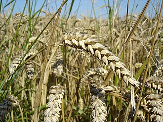

こむぎ（小麦）の生産量 都道府県ランキング
全47県の順位と、とれた量
こむぎが日本でいちばん多くとれるのは北海道です。67万1,900 tで、全国（103万1,000 t）の65%を占めます。

| 順位 | 都道府県 | 収穫量 | 全国に占める割合 |
|---|---|---|---|
| 1位 | 北海道 | 67万1,900 t | 65% |
| 2位 | 福岡県 | 6万4,500 t | 6.3% |
| 3位 | 佐賀県 | 4万5,500 t | 4.4% |
| 4位 | 愛知県 | 3万5,000 t | 3.4% |
| 5位 | 三重県 | 2万5,200 t | 2.4% |
| 6位 | 滋賀県 | 2万3,900 t | 2.3% |
| 7位 | 群馬県 | 2万3,200 t | 2.3% |
| 8位 | 埼玉県 | 2万900 t | 2.0% |
| 9位 | 熊本県 | 1万7,500 t | 1.7% |
| 10位 | 茨城県 | 1万3,900 t | 1.3% |
| 11位 | 岐阜県 | 1万3,100 t | 1.3% |
| 12位 | 栃木県 | 9,350 t | 0.9% |
| 13位 | 岩手県 | 9,200 t | 0.9% |
| 14位 | 香川県 | 8,760 t | 0.8% |
| 15位 | 大分県 | 7,330 t | 0.7% |
| 16位 | 長野県 | 7,040 t | 0.7% |
| 17位 | 宮城県 | 5,220 t | 0.5% |
| 18位 | 兵庫県 | 4,910 t | 0.5% |
| 19位 | 山口県 | 4,590 t | 0.4% |
| 20位 | 岡山県 | 4,540 t | 0.4% |
| 21位 | 千葉県 | 2,590 t | 0.3% |
| 22位 | 青森県 | 1,870 t | 0.2% |
| 23位 | 長崎県 | 1,840 t | 0.2% |
| 24位 | 福島県 | 1,270 t | 0.1% |
| 25位 | 愛媛県 | 1,170 t | 0.1% |
| 26位 | 静岡県 | 1,110 t | 0.1% |
| 27位 | 秋田県 | 911 t | 0.1% |
| 28位 | 福井県 | 771 t | 0.1% |
| 29位 | 新潟県 | 533 t | 0.1% |
| 30位 | 奈良県 | 422 t | 0.0% |
| 31位 | 山形県 | 362 t | 0.0% |
| 32位 | 広島県 | 342 t | 0.0% |
| 33位 | 京都府 | 313 t | 0.0% |
| 34位 | 宮崎県 | 304 t | 0.0% |
| 35位 | 徳島県 | 227 t | 0.0% |
| 36位 | 鳥取県 | 213 t | 0.0% |
| 37位 | 山梨県 | 194 t | 0.0% |
| 38位 | 石川県 | 193 t | 0.0% |
| 39位 | 富山県 | 147 t | 0.0% |
| 40位 | 島根県 | 110 t | 0.0% |
| 41位 | 鹿児島県 | 93 t | 0.0% |
| 42位 | 神奈川県 | 78 t | 0.0% |
| 43位 | 和歌山県 | 43 t | 0.0% |
| 44位 | 東京都 | 24 t | 0.0% |
| 45位 | 沖縄県 | 14 t | 0.0% |
| 46位 | 大阪府 | 1 t | 0.0% |
| 47位 | 高知県 | 1 t | 0.0% |
この数字について
- 分類：イネ科
- 全国の収穫量：103万1,000 t
- この数字が表すもの：収穫量（畑や田でとれた重さ）
- 調査：作物統計調査 作況調査（麦・豆・工芸農作物ほか） 令和7年産
- 47県分を調査（調査していない県は順位に入りません）
こむぎの生産量について、よくある質問
- こむぎの生産量が日本一の都道府県はどこですか？
- 北海道です。作物統計調査 作況調査（麦・豆・工芸農作物ほか）（令和7年産）で67万1,900 tでした。
- こむぎの生産量ランキング2位・3位はどこですか？
- 2位は福岡県（6万4,500 t）、3位は佐賀県（4万5,500 t）です。
- こむぎの生産量ランキング4位・5位はどこですか？
- 4位は愛知県（3万5,000 t）、5位は三重県（2万5,200 t）です。こむぎの全47県の順位は上の表のとおりです。
- こむぎの全国の生産量はどれくらいですか？
- 103万1,000 t（令和7年産）です。